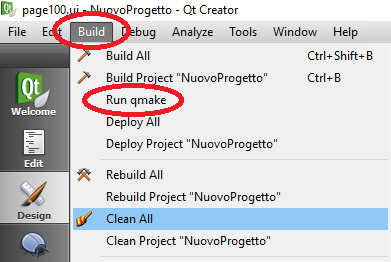

Pour supprimer une page existante, entrez dans la section “Form” de l'arbre du projet à gauche, puis cliquez avec le bouton droit de la souris sur le fichier.ui relatif à la page à supprimer et choisissez “Remove file”. Dans la fenêtre suivante, sélectionnez “Delete file permanently” et appuyez sur “Close”.
Supprimez les pages .cpp et .h pertinentes.
Attention: après avoir supprimé la page désirée, vous devez “nettoyez” le projet pour éviter les erreurs lors de la compilation.
En particulier, appuyez sur Build → Clean All
Attendez que le bar devienne vert.

puis appuyez sur Build → Run qmake

Attendez que le bar devienne vert.

Attention: Effectuez une autre fois Build au cas où une erreur serait signalée.